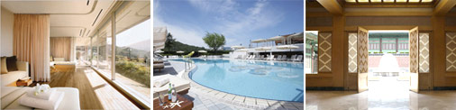
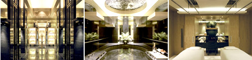
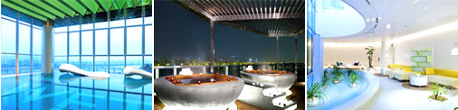
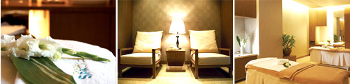

Beauty & Welness
Spas in Seoul
Everyone across the globe is united by one common dream: the dream of living a healthy and balanced life. As cities and countries worldwide continue to evolve and industrialize at a sometimes alarming rate, people are increasingly seeking a quiet retreat from their busy, hectic lives. This desire to find refuge in nature has resulted in the creation of various types of spas, which are now (somewhat ironically) among some of Korea's major travel destinations. So kick back and relax and continue reading for more on spas in Korea—hotel spas, resort spas, day spas, and medical spas. You're sure to find the perfect type of spa for you!
| Hotel Spa | Resort Spa | Day Spa | Medical Spa |
Hotel Spa
Hotel spas are the ultimate experience in indulgence and offer customers an array of luxury spa products and services. Though initially offered as a subsidary service for hotel guests, hotel spa services have come into their own and now cater to an ever increasing number of outside guests.
The Shilla Seoul, Guerlain Spa

Guerlain Spa is a joint venture between The Shilla Seoul, a leading hotel in Korea, and the French cosmetics brand Guerlain. At the spa, one of ten professional therapists trained at the headquarters of Guerlain in France meet with each client and recommend the best treatment program for each individual.
Banyan Tree Club & Spa Seoul, Banyan Tree Spa

A luxury Oriental spa, the Banyan Tree Spa is famous for massages and treatments based on traditional Oriental therapy. The Seoul location is one of 60 or so Banyan Tree Spas worldwide and offers all of the spa chain's major treatments, including its signature Royal Banyan and traditional Thai massage.
Grand Hyatt Seoul, The Spa

Based on the concept of 'a garden in the city', The Spa offers clients high-quality hotel spa services at reasonable prices. Spa treatments are customizable based on each guest's physical makeup and personal preferences, leaving the choice of background music, aroma oil, and even after-treatment tea to each customer.
W Seoul Walkerhill, Away Spa

Located on a hill overlooking the Hangang River, Away Spa is a unique space that combines soothing white walls with tastefully-placed neon lights. The spa's signature treatment, called 'Awayssage' is a whole body treatment using the product 'Marine Bowler,' made of lavender petals and warm salt, which eases tension from the body and mind.
Hotel The Plaza, Plaza Spa Club

The Plaza Spa Club of Hotel The Plaza, which overlooks the Seoul Plaza in downtown Seoul, is a luxury medical spa with a convenient urban location. A range of customized programs are available, including a rejuvenation program for office workers and a treatment program for men.